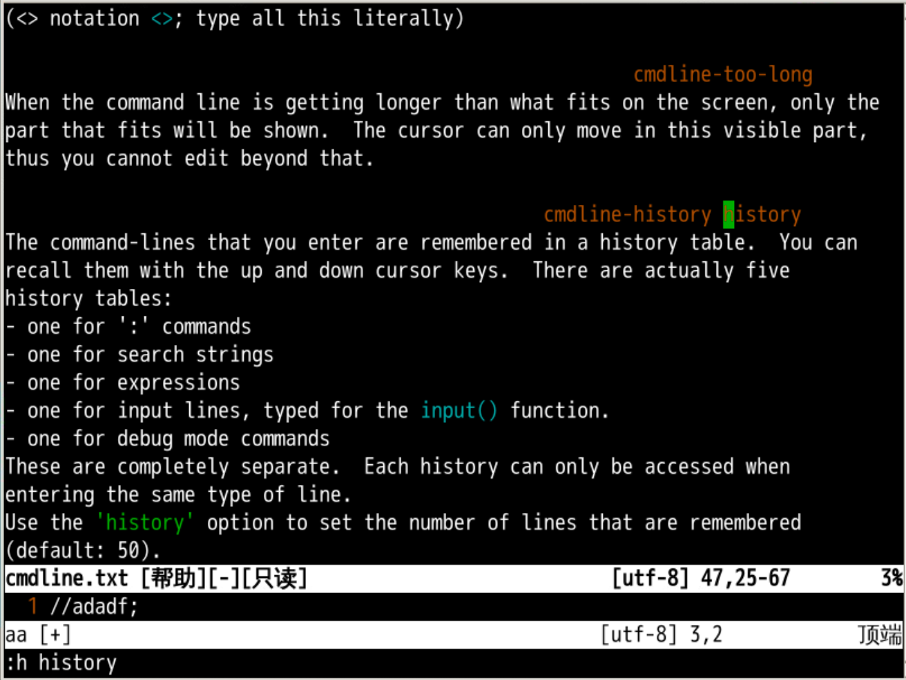
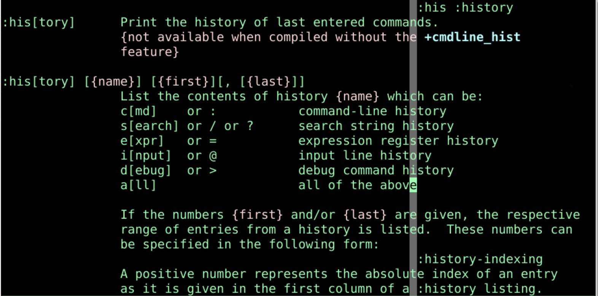
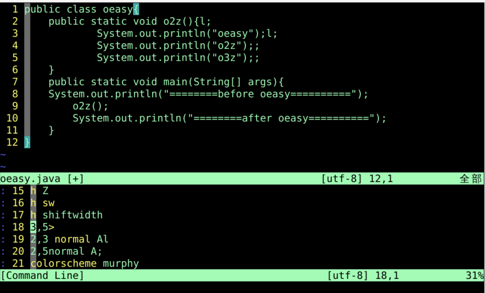
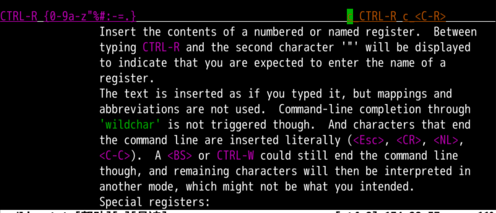
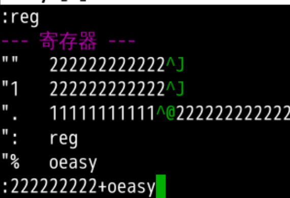
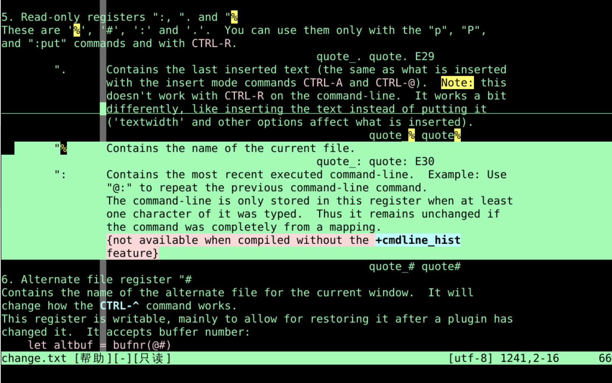
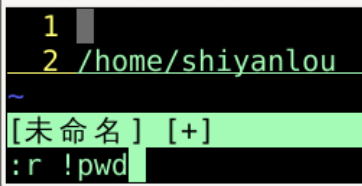
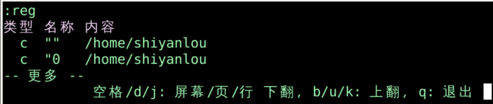

命令行效率
回忆上节课内容🤔
总结
- 我们上次研究的是范围命令执行方法
- 批量控制缩进
- 批量执行普通模式下的命令
- 直接切换到
全屏命令模式 ex-mode
- 执行外部命令
- 这个方式真的很爽!
- 命令模式本身可以再提高效率吗？🤔
列出历史
使用历史命令
- 在输出命令时
- 方向键⬅️️➡️️️可以控制左右移动
- shift+⬅️️➡️️️按照word左右移动光标
- ctrl+b 到开头begin
- ctrl+e 到结尾end
- ctrl+w 向前删除一个word
- 这个要特别注意，有的浏览器关闭标签页
- 我用火狐🦊一点问题没有
- ctrl+u 删除到开头
- 方向键↑️↓️️️可以翻阅历史命令
- 也可以先输入
:h s再按下↑️
- 可以根据已经有的内容找出
:h scrolloff:h shiftwidth
- 想要列出所有命令历史怎么办？
命令历史

:h his[tory]可以找到 commandline.txt- 可以按照类型查看历史
:his c 或:his : 命令类历史:his s 或:his / 或 :his ? 搜索类历史:his e 或:his = 表达式寄存器类:his i 或:his @ 输入行类:his d 或:his > debug类
- 可以加范围
:his 2,5 2-5行命令历史:his / 3,9 查询类命令历史的3-9条his -5,-1 最新的5条
- 总共可以保存多少条命令呢？
命令数量
:set history&
:set history?
- 设置更多命令历史记录

直接修改命令

新窗口
- 这个窗口有历史的命令
- 回车后执行光标所在行的命令
- 执行后
- 我能在命令行里复制粘贴么？
使用寄存器
- 我能在命令行里复制粘贴么？
- 可以查询手册
:h c_ctrl-r
- 查询命令模式下的ctrl+r
- 这和插入模式下使用寄存器一致
- 都是ctrl+r
- 然后再指定寄存器
- 这样我们就可以在命令行里面使用寄存器了

使用默认寄存器
- 先
:进入命令行模式"
- 然后ctrl+r
- 然后如果我们这个时候摁下"
- 就把默认寄存器里面的内容放入了命令行中

使用当前文件名寄存器%
- 如果我们再
:
- 然后ctrl+r
- 摁下%就把文件名放入了命令行中
- 比如
:!javac的时候
- 可以用这种方法把当前文件名输入到命令行中

复制路径和文件名


- :e 之后
- 按下ctrl + r
- 然后选用缺省寄存器"
- 就可以把缺省寄存器中存储的数据
- 放到命令行编辑器里面
总结
- 命令行的运行光标控制
- 方向键⬅️️➡️️️可以控制左右移动
- shift+⬅️️➡️️️按照word左右移动光标
- ctrl+b 到开头begin
- ctrl+e 到结尾end
- ctrl+w 向前删除一个word
- ctrl+u 删除到开头
- 历史命令的遍历
- 命令行的历史记录
- 进入命令历史记录编辑
- 命令行状态下 ctrl+f
- 或者正常模式下 q:
- 选择、编辑、回车
- 使用寄存器
- 命令行状态下 ctrl+r
- 然后输入寄存器的名称就可以了
- 命令模式可以读写文件吗？🤔
-
下次再说 👋